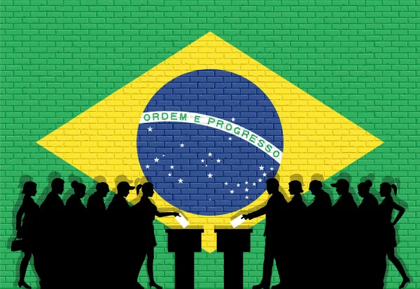

Escolha que tipo de leitor político você é — e receba notícias feitas pra você.
O Boletim PoliticaBR é o jornal digital de inteligência política do Brasil moderno, palma da sua mão, diariamente no seu E-MAIL. Antes de ter acesso à nossa urna de votação e pesquisa, diga de que lado você é!

⚖️ EQUILÍBRIO REAL
Perguntas neutras, sem termos indutivos e com alternativas que representam posições autênticas.
🎯 CURADORIA VIP
Seu tempo é precioso. Filtramos o que realmente impacta seu bolso, seus direitos e seus princípios.
🔄 OS DOIS LADOS
A mesma notícia analisada sob as óticas de direita e de esquerda para você tirar suas próprias conclusões.
📰 A notícia de hoje, nos dois lados
Veja como o mesmo fato é contado para cada perfil — desbloqueie a versão completa em segundos
Proposta de revisão de isenções fiscais pode destravar recursos para saúde e educação
Relatores defendem que o fim de benefícios a grandes grupos econômicos pode reforçar o financiamento de políticas sociais.
Setor produtivo alerta para impacto de nova regra fiscal sobre investimentos
Entidades empresariais defendem cautela e pedem que o ajuste priorize corte de gastos públicos antes de rever incentivos.
⭐ O que nossos assinantes dizem
"Eu vivia vendo um monte de notícia sobre as eleições e não sabia mais no que acreditar. Hoje consigo acompanhar tudo com muito mais tranquilidade."
"Assino há um tempo e virou parte da minha rotina. É muito mais fácil entender o que está acontecendo sem precisar ficar horas acompanhando as notícias."
"Antes eu recebia tanta coisa pelo WhatsApp que ficava até difícil saber o que era verdade. O boletim me ajuda muito a filtrar isso."
"O que mais gosto é que não preciso acompanhar política o dia inteiro. Leio o boletim e já consigo ter uma boa noção do que realmente importa."
"Eu me sentia completamente perdida com tanta informação sobre as eleições. Hoje tenho uma fonte que me ajuda a entender as coisas de verdade."
"Depois que comecei a assinar, parei de compartilhar notícia só porque alguém mandou. Primeiro leio o boletim e vejo o contexto."
"É aquele tipo de coisa que você lê em poucos minutos e pensa: 'agora eu entendi o que está acontecendo'."
"Confesso que eu quase não acompanhava política antes. O boletim deixou tudo muito mais simples e interessante para mim."
"O melhor é não ficar só no 'aconteceu isso'. Eu consigo entender o que aconteceu, por que importa e o que pode acontecer depois."
"Hoje, quando aparece alguma notícia política nas redes, já tenho muito mais facilidade para perceber quando falta contexto ou quando algo parece duvidoso."
"Me sinto muito mais informada sem precisar passar o dia inteiro nas redes sociais. Para mim, essa foi a maior diferença."
"Eu assinei pensando que seria só mais um resumo de notícias, mas acabou virando minha principal forma de acompanhar as eleições."
"Finalmente consigo conversar sobre política sem aquela sensação de que estou por fora de tudo."
"Tem tanta informação circulando durante as eleições que é fácil se perder. O boletim me ajuda a separar o que realmente merece minha atenção."
"Depois que comecei a receber o boletim, sinto que consigo acompanhar a política de uma forma muito mais leve e consciente."
Com qual desses três lados você mais se identifica?
Então você é um...?
Confirme se é isso mesmo — vote agora na nossa urna oficial.
Centro-Direita Liberal
Carregando explicação do perfil...

A partir deste perfil, o Boletim PoliticaBR seleciona as matérias mais relevantes para você, destacando também a seção "Dois Lados" para garantir que você conheça os argumentos de todo o tabuleiro.
A Urna do Boletim PoliticaBR
Agora que você descobriu seu perfil político, em quem você votaria para Presidente da República se as eleições fossem hoje?
PRESIDENTE DA REPÚBLICA
Seu Boletim PoliticaBR como Aplicativo
Experimente abaixo a prévia interativa do app já calibrado com a sua visão de mundo.
Comissão aprova corte de gastos administrativos e trava criação de novas secretarias.
Medida atende apelo de setores produtivos por alívio fiscal e responsabilidade orçamentária estrita em Brasília.
Digite a sigla do seu Estado (ex: SP, RJ, MG, RS) para conferir a posição dos parlamentares na última sessão:
O cálculo do Planalto para 2026: Levantamento confidencial aponta que líderes partidários já condicionam apoio em votações ao controle de emendas no 2º semestre.
Vagas Restritas para a Fase de Pré-lançamento
O Boletim PoliticaBR opera de forma 100% independente, sem verbas estatais nem patrocinadores que interfiram em nossa linha editorial. Para assegurar a estabilidade da infraestrutura e a integridade da curadoria personalizada, a abertura de novos acessos é realizada em lotes estritos e pode ser suspensa a qualquer momento.
Garantir meu acesso
Faça o quiz para que sua edição seja personalizada.
📊 Resultado em Tempo Real das Urnas do Boletim
Votos consolidados entre todos os leitores que concluíram o diagnóstico: